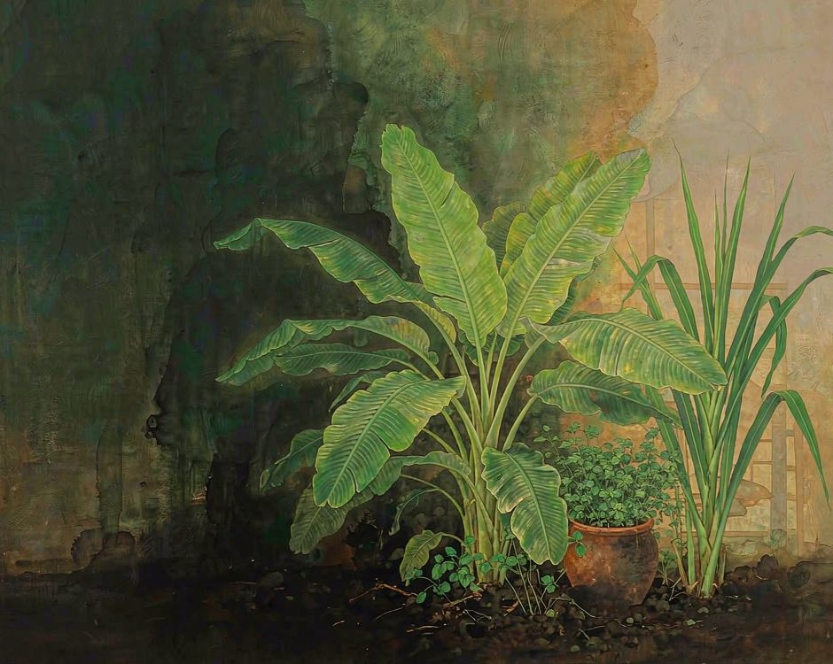
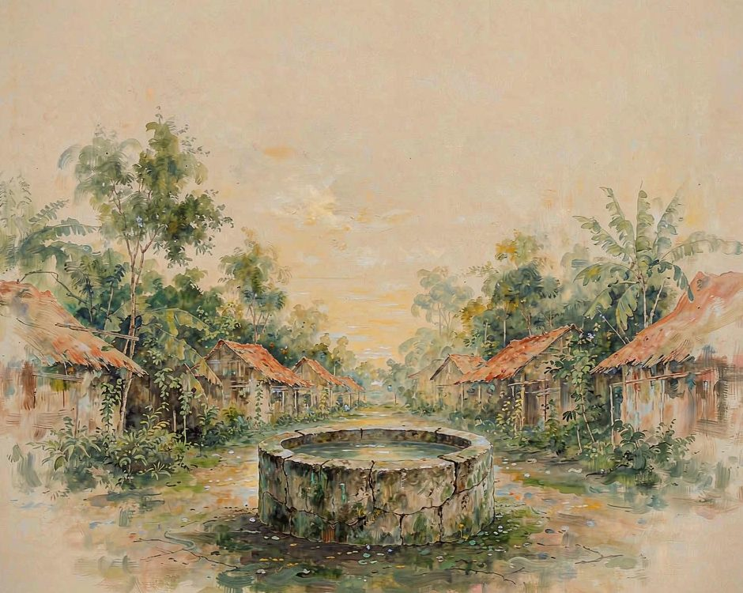

云南西双版纳的厨房，灶边就种着一片雨林。
芭蕉叶从墙根长出来，够得着就摘。香茅成丛，割一把扔进炭火。辣椒和罗勒在窗台下面排成一行，随手掐一把。
叶子长到一臂长，宽得像一把扇子，表面有一层薄薄的蜡光，摸上去是凉的。
这样一桌饭，不用去森林里找。

桌上的叶子，是灶边种的
包东西这件事，各地各有各的本事。北方用荷叶，西边用芭蕉叶。
傣族用得顺手，是因为三个条件同时在。屋前有水，屋后有竹子，芭蕉一年三季都长新叶。一片叶子从长成到能用，只要一个月。一个月前它还在根上攒力气，一个月后它已经在炭火边上被烤软，变成一包香料。
叶子本身就是一道配料。烤鱼的香气有一半是从叶子里逼出来的，叶脉里的水汽被火一逼，香茅的味就压住了鱼的腥。
包出来的鱼肉带叶子的香，吃下去记得住。
一片叶子要撑过一次饭。一桌四五个人，至少要十几片。
叶子不能太大，大了味道压过鱼。不能太小，小到包不住还漏风。大的铺底，小的封口。挑叶子是眼力活，干过的人才知道哪一片最合适。
挑的时候看叶柄。柄短而粗的，水分多，烤出来是软的。柄细长的，水分少，烤出来带脆。两种混着用，一软一脆，包出来才有层次。同一片叶子的两面也不一样，朝太阳那一面蜡光厚，背阴那一面软一些。火候要靠这两面的差别来配。
包的时候还有一处讲究。鱼要开背，肚子朝下压在叶子上，叶子才能兜住汤汁。
压实了再拿细绳绕两圈，绕的方向要顺着叶脉，顺着缠叶片不会散。收口那一折要压在里面，外面看不见缝。这一步没有工具，全靠手。挑完还得洗，一片一片拿水冲，把灰冲掉。冲完摊开，叶柄朝同一个方向码好，等着上火。
这活儿不费眼睛，费时间。一桌饭从摘叶子到端上桌，前后要小半个钟点。城市里的一餐送到门口只要十分钟，这里要小半个钟点。慢下来的地方就在这里。
慢不是仪式，是一层层要做的动作。
雨决定什么时候做
傣族的时间不按钟表走，按雨走。
旱季凉，田里的活多，砍竹、整地、育苗，一件接一件。
雨季热，什么都做不动，人就歇在竹楼下，等雨停。这种日子在城里会被当成浪费，可在版纳，歇本身就是农事的一部分。
雨季的歇不是没事干。
修屋、补篓、编席、舂米、酿酒，都在这几个月做。竹子砍下来要晾，晾够了才能编。糯米泡下去要等，等够了才能蒸。这些事没法加速，加了就坏。整个雨季都在等一个刚刚好的湿度。
四月里的泼水节，是把水送出来的意思。旧的一年走完，水也走完一程，节日做的是往下游补水、上游收水，让水重新转起来。
节日里有人擡着东西顺水走，走到村口把水泼在别人身上，也把一年的旧一起泼掉。没有一年到头把水断掉这件事，水会记得。泼水那几天，寨子里的门全打开。谁家的桌子都摆得出来，煮好的菜端出来放在门口，谁路过谁拿。
有人从上游带一盆水过来，往你身上泼一下，也顺便把门口那盘菜带走一点。这一来一去，看着是闹，其实是补给。水在流动，菜也在流动。
泡过一次太阳的糯米，晒过的辣子，腌过一坛的酸笋，都在各自的时节里慢慢来。糯米饭要在竹筒里闷，闷够那段时间才软。急不得，火候不是靠看，是靠闻。
寨子中间那口井
傣族村寨有个老规矩，寨子中间要留一口井。井旁边通常是佛寺，也是一块空地。井是公用的，洗衣服在下游，挑水在上游，这个顺序几百年没变过。谁先挑、谁后挑，靠的不是喊，是看见前面的人走了就等一等。
寨门也在中间，进出都要过。门那边是寨子，这边是路。人从门里出来，先看一眼水，再走。
多数人不会意识到自己每天都在完成同一个动作，可这一下停顿，让一天有了起点。
公共的东西放在中间，谁都够得着，也都得经过。
中间留空这件事，比盖多少栋房子都重要。

诚实的部分
有一件事得说出来。
版纳这一带的雨林，现在有很多地方变成了橡胶林。雨树少了，橡胶树多了，这是正在发生的事，村里人心里自己清楚。
橡胶是换钱的。割胶的时间集中在清晨，天没亮就得进林子，一棵树割一刀，树上就多一道口子。割胶的收入比种菜稳，也比种菜多。年轻人多往这边走，村子里种田的人就少了。
有一年橡胶价跌得很厉害。那几个月胶工的钱少了一大半，村里有几户撑不住，田也搁了一片。
搁下来的地长草，竹子从缝里钻出来，长得比人快。那阵子村里有的人开始往回走，重新把那片地清出来，第二年插下去。回来的理由很简单，田还在那里，船回来还能靠岸。
柴火、建材、菌子、笋、一些从前随手就能采到的东西，现在要花钱买。这一点不浪漫化，损失是实在的。
可灶边那片雨林还在。芭蕉不是长在深处的，它是给人种在门口的。香茅、辣椒、罗勒也是这样。森林可以退得很远，包住一顿饭的叶子还长在屋后。土地没有消失，它只是换了位置，从远处的林子挪到了灶台边上。
也有年轻人回来。有个在城里做了几年活的小伙子，回来接手了家里那点胶树，同时把屋后的芭蕉扩了一片。
他说不清为什么，就是觉得每天能看见叶子长出来，一天就有底。胶还是那些胶，可多了一样东西，是从前没有的。
森林可以走得很远，包住一顿饭的叶子还长在灶边。
想种回去，不必先到西双版纳
不必去版纳，也种得出一片。
买一把香叶，捏一下叶脉，脆的那把新鲜，蔫的那把放久了。买一根香蕉，闻一闻根部，熟过头会有酒味。买一把青菜，看叶子上有没有虫眼，有虫眼说明没打太多药。这些动作花不了一分钟，一分钟之后那把菜的重量就不再是标价牌上的数字。
再种一盆。阳台角落放两盆辣椒和罗勒，掐一把就能下锅。土干了要浇，浇多了会烂，烂了要换盆。
剪的时候有一点疼，植物不会安慰人，但它会继续长。
土的变化很慢。原先板结的土，浇过几次水会松，土松了根就扎得深，根深了叶子就厚。看不见的过程都在发生，慢到要一个月才显形。
然后把这件事说给一个人听。说出去的时候不带着炫耀，是一条线索。听到的人或许也去问一句他手上那把叶子的来处。
一个人问，三个人问，一条线就接上了。
（小练习。今天做一道菜的时候，买一把带梗的香叶，捏一下叶脉，问问它走了多远才到你的锅边。）
你手上现在最常出现的是哪一把叶子。